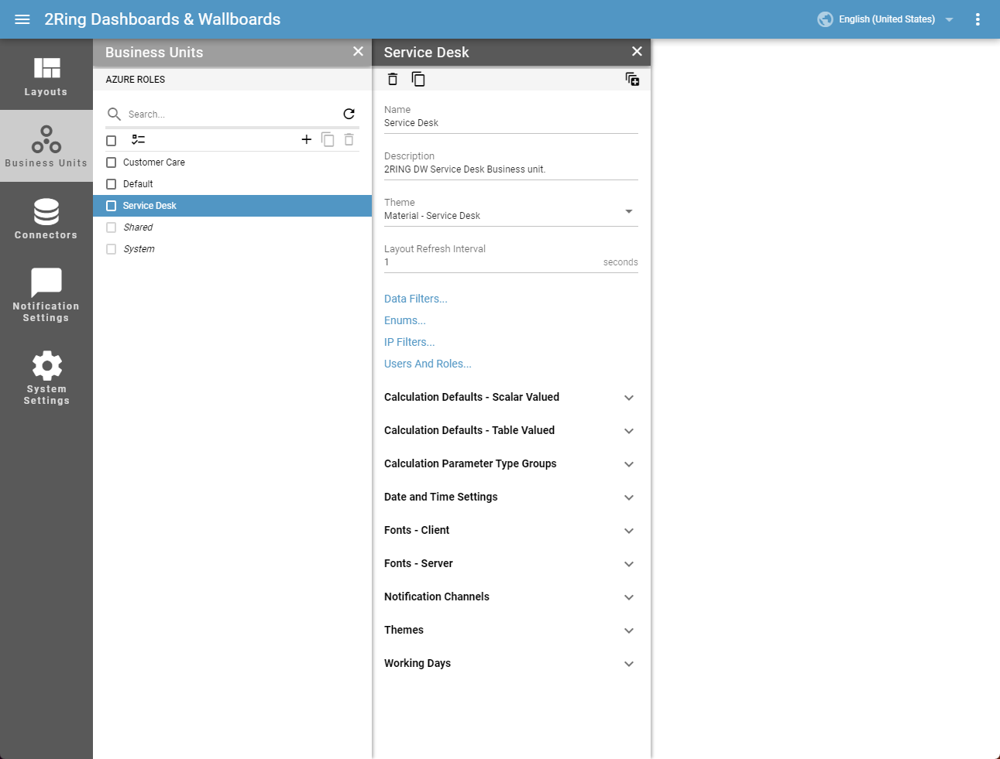
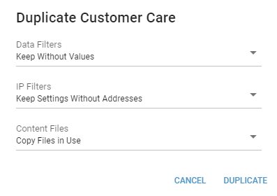

Business Units¶
A Business Unit (BU) is the main security boundary of the system. A Business Unit holds all lower-level entities such as users, administrators, enumerations, themes and more. A user can see or use everything that belongs to their Business Unit or to the Shared Business Unit.
- Name
Required
The name of Business Unit.
- Description
A short definition of the usage of the Business Unit.
- Theme
Required
Default appearance of all Layouts in this Business Unit.
- Layout Refresh Interval
Interval in which Layout refreshes its content.
- Calculation Defaults - Scalar Valued
Settings for a scalar-valued calculations. These settings are used by a KPI, Calendar, Pie Chart segment and Bar/Line Chart - KPI Timeline series.
- Refresh Interval
Required
The time interval in seconds to check for new data.
- Log Retention
Required
Number of days DW keeps logs for specific calculations. The maximum value is 32.
- Calculation Defaults - Table Valued
Settings for a table-valued calculations. These settings are used by a Grid, Bar/Line Chart - Grid series and a Word Cloud.
- Refresh Interval
Required
The time interval in seconds to check for new data.
- Log Retention
Required
Number of days DW keeps logs for specific calculations. The maximum value is 32.
- Date and Time Settings
Date and time settings the calculations should use by default.
- Time Zone
Required
This setting allows to specify which time zone the calculations should use by default.
- First Day Of Week
Required
This setting is used in calendar and chart segments to correctly order shown days.
- Working Hours Start
Required
When chart displays values from one day it’s possible to set from what time of day we want to see values.
- Working Hours End
Required
When chart displays values from one day it’s possible to set until what time of day we want to see values.
- Working Days
This setting is used in calendar and chart segments for determining values for which days should be displayed.
Copying Business Units
The Business Unit copy wizard allows a system admin to create copies of Business Units. All entities (except Layouts) created within the Business Unit are copied. The copy wizard is located in panel toolbar and can be opened with button.
There are 3 options how to handle Data filters when copying Business Units:
- Don’t Keep
Filters are not copied from the selected Business Unit. Users will have access to all values of the enumeration parameters.
- Keep Without Values
Filters are copied from the selected Business Unit but with no values allowed. Filter without selected values means no enumeration parameter values will be available to the new Business Unit.
- Keep With Values
Filters, including their selected values, are copied from the selected Business Unit.
There are 3 options how to handle IP filters when copying Business Units:
- Don’t Keep
Filters are not copied from the selected Business Unit.
- Keep Settings Without Addresses
Filter settings, without specific allowed IP addresses, are copied from the selected Business Unit.
- Keep Settings With Addresses
Filter settings, including specific allowed IP addresses, are copied from the selected Business Unit.
There are 3 options how to handle Content Files when copying Business Units:
- Don’t Copy
Content files are not copied from the selected Business Unit.
- Copy Files In Use
Only files which are currently used in Business Unit or its children are copied. Since Layouts are not being copied during copy of Business Unit, also files used in them will not be copied.
- Copy All
All content files are copied.
Figure 1: Copy dialog
Generating Azure Roles
During configuration of Azure authentication for DW, application’s manifest has to be updated. Part, that should be inserted into the manifest can be generated here.
If DW is not using Azure authentication this option can be ignored.